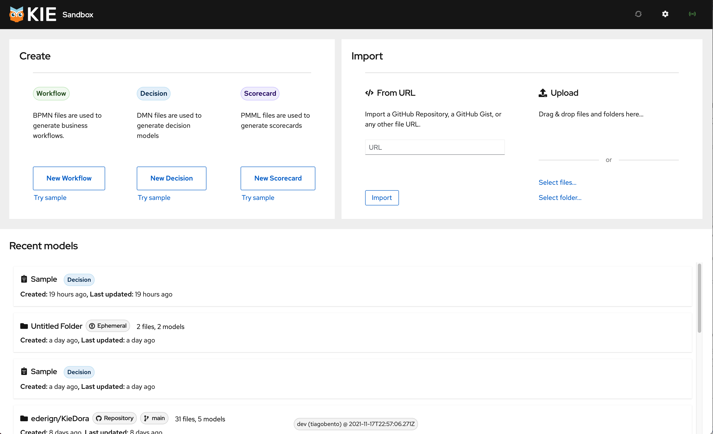
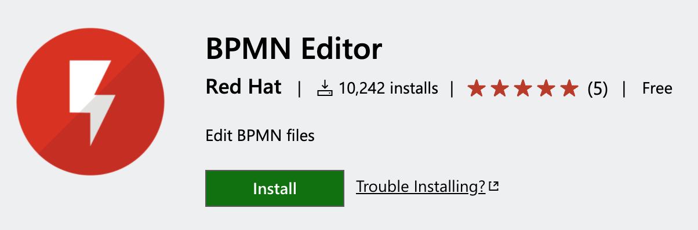
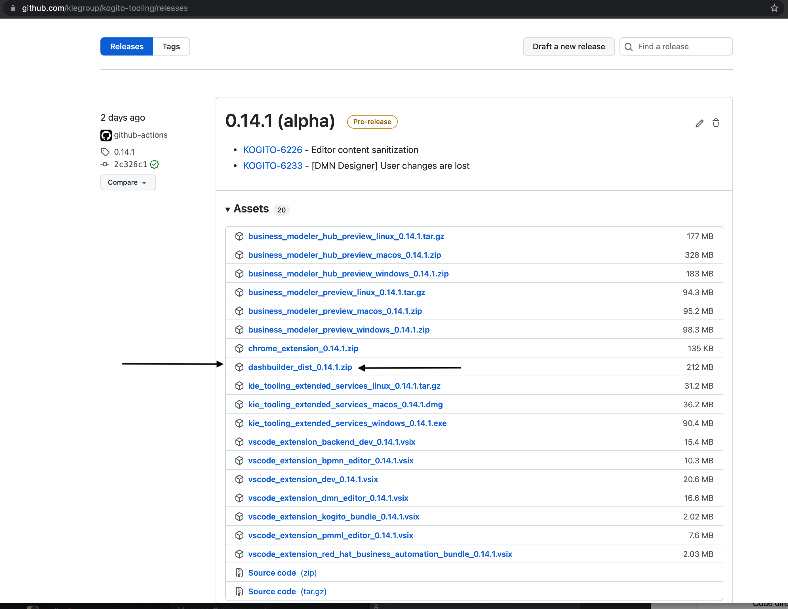
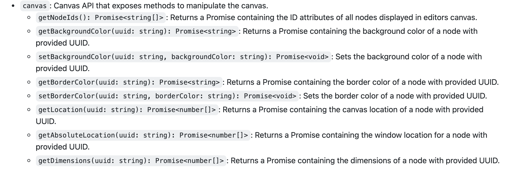

Kogito Tooling Released! 10k+ installs on BPMN extension, Dashbuilder Runtime in Quarkus, and an outstanding KIE Live next week!
We have just launched a fresh new Kogito Tooling release! 🎉 On the 0.14.1 release, we made a lot of improvements and bug fixes.
This post will give a quick overview of our most recent releases. I hope you enjoy it!
Don’t miss the KIE live next week
Our beloved .new environment will receive a massive update! Dealing with complex models and collaborating with others will become much easier.

Join us on the 23rd of November in the next KIE Live presentation for a walkthrough of the new features and new integrations we have with the Developers’ most beloved tools.
10k+ users of VS Code BPMN Extension
Our BPMN extension just reached an important milestone on VS Code Store: 10k+ individual installs! Congrats to Roger (tech lead) and all the BPMN/Stunner team.

Automatically Generate BPMN/DMN SVG on VS Code
To provide better integration with the KIE server and Business Central, on the Kogito Tooling 0.14 release, we introduced a way to, on VS Code, automatically generate SVG on each save of your BPMN and DMN Diagram. Take a look at this feature in action:

Please take a look at this blog post for further details!
DashBuilder Runtime released on Kogito tooling
We are glad to announce that we are releasing DashBuilder Runtime 0.14.1 Alpha! The major change for this new release is the adoption of Quarkus as the backend for DashBuilder Runtime and the introduction of DashBuilder Authoring, a new tool to create dashboards.

From now on, we will also follow the Kogito Tooling release cadence! Soon we will publish a blog post with more details!
Canvas API
We also just released the first iteration of a JS / TS API for node manipulation in our editors. This new API allows to manipulate the shapes in the canvas, so third parties can play with the different objects in the canvas

Visualize, Edit, and Share your BPMN, DMN, and PMML with github.dev
Some weeks ago, GitHub released github.dev which allows you to open any repository in VS Code directly from your browser just pressing . (dot key) on it. On Kogito Tooling 0.13.0 release, we updated our VS Code BPMN, DMN, and PMML extension to also work on this innovative environment. Check it out:

Please take a look at this blog post for further details!
New Features, fixed issues, and improvements
- KOGITO-6226 – Editor content sanitization
- KOGITO-6233 – [DMN Designer] User changes are lost
- KOGITO-2099 – Generate a SVG diagram automatically on each BPMN/DMN diagrams save
- KOGITO-6083 – [DMN Designer] Improve BKM description rendering on documentation tab
- KOGITO-5973 – Stunner – Create an initial JS / TS API for accessing the canvas and its elements
- FAI-622 – ScoreCard: MiningField validation
- FAI-579 – Mining Schema (PMML Editor test Suite)
- KOGITO-2133 – [VSCode] Custom editor save issues
- KOGITO-2553 – Editors – Editing the node name and pressing enter to confirm
- KOGITO-6033 – [DMN Designer] Unreadable data type information in PDF document that shows DMN decision model
- KOGITO-6037 – [DMN Designer] Background color do not work on DMN Editor (online and VSCode)
- KOGITO-6021 – [DMN Designer] Multiple DRDs – Renaming a DRD freezes the browser
- KOGITO-5715 – Online DMN Editor should support deployment to any Openshift Cluster other than Dev Sandbox
- DROOLS-6477 – Collections Data Objects can be filled with expressions only.
- KOGITO-3909 – Standalone DMN editor missing isDirty indication on data type or included models change
- KOGITO-5149 – Create the second step of the Wizard – Create the collapsible/expandable list of future Data Types
- KOGITO-5676 – BPMN Editor – Containment not working when Node overlaps the Connector while splicing
- KOGITO-5721 – formInputs should be parsed with dates as objects, not strings.
- KOGITO-5791 – Get the Route through the REST API and remove the console URL property.
- KOGITO-5725 – Enable extensions for github.dev.
- KOGITO-3909 – Activate the DMN dirty indicator test
- KOGITO-2595 – DMN Guided tour cypress tests
- KOGITO-5428 – Introduce DMN Runner cypress test
- FAI-546 – ScoreCard Model Setup Test
- FAI-558 – Score Cards: Algorithm Name cannot be cleared
- FAI-529 – Score Cards: Data Dictionary: Remove duplication of delete icons
- KOGITO-5678 – Metadata atrribute ‘elementname’ not present for events, intermediate events & gateways by default
- KOGITO-5721 – Filled DateTime field on Dev Sandbox form break Runner when it’s opened on Online Editor
- KOGITO-5447 – kogito-examples non unique packages
- KOGITO-5613 – kogito-editors-java pre push hooks
- KOGITO-5728 – [DMN Designer] New Boxed Expression editor – Remove grip from the new boxed expression editor
- KOGITO-5756 – Improvements for the KIE Tooling Extended Services outdated icon
- KOGITO-5792 – Fix Quarkus Dev UI DEV mode
Further Reading/Watching
We had some excellent blog posts on Kie Blog and Kie Lives that I recommend to you:
- Developing Business Process More Efficiently with Runtime Tools Quarkus Extensions, by Paulo;
- [KIELive#52] Stateless microservices with processes and decisions, by Tiago Dolphine;
- [KIELive#48] Custom forms for User Tasks with Kogito and Quarkus, by Pere;
- [KIELive#46] Tips and tricks: How to be efficient when developing business processes on Quarkus, by Paulo;
Thank you to everyone involved!
I would like to thank everyone involved with this release, from the excellent KIE Tooling Engineers to the lifesavers QEs and the UX people that help us look awesome!

{kind=link}
{kind=link}
{kind=link}
{kind=link}